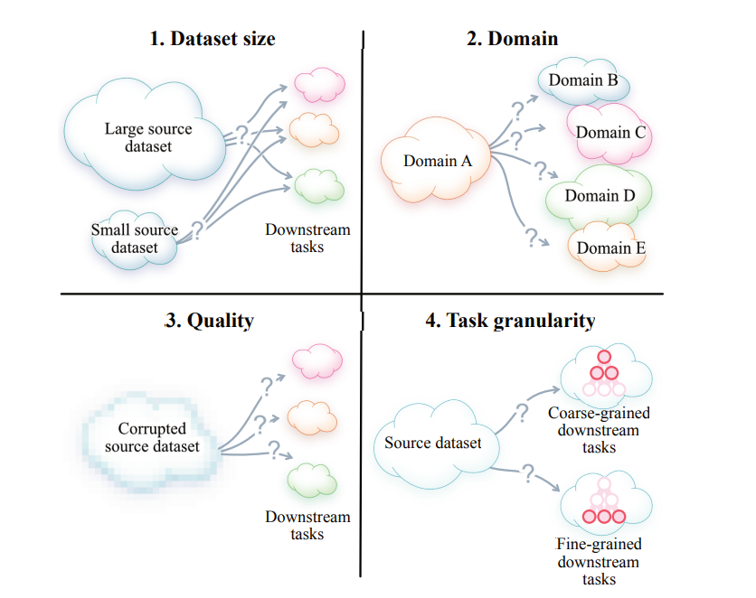
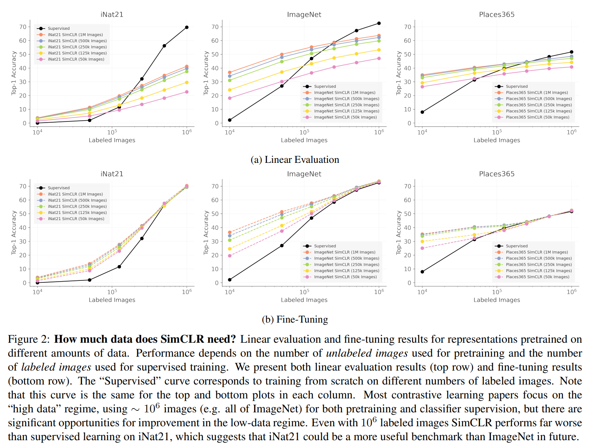
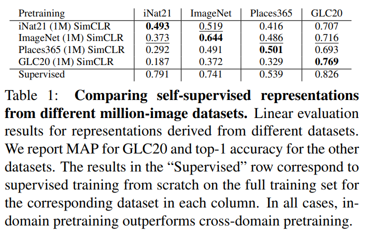
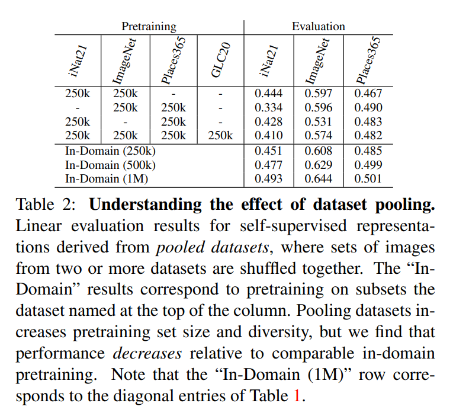
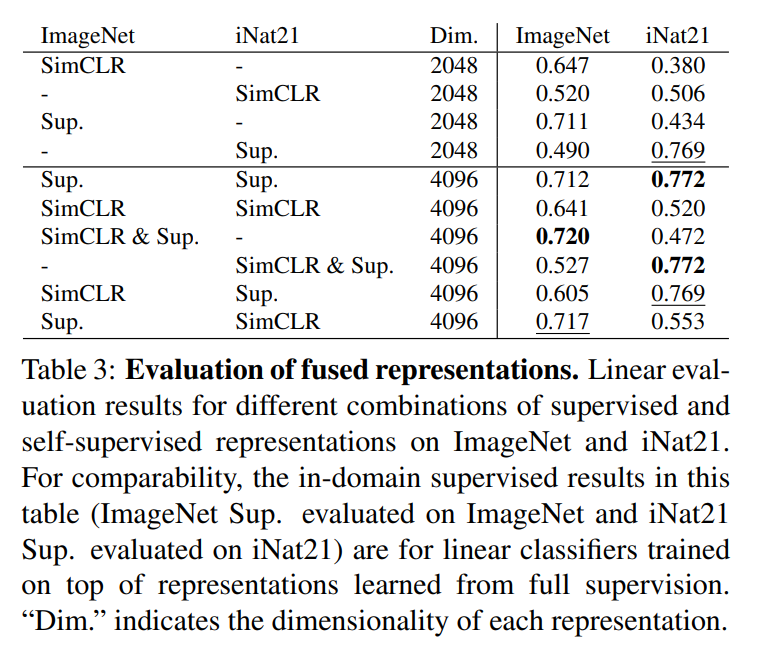
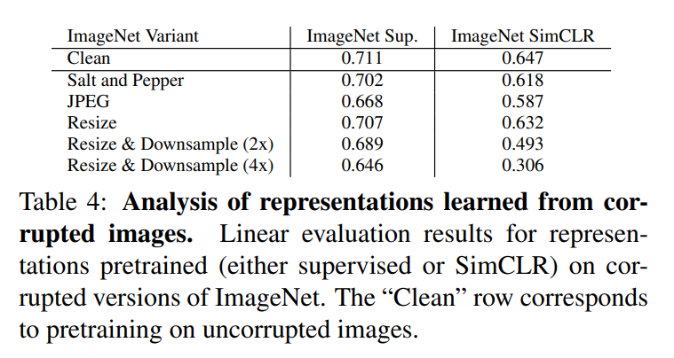
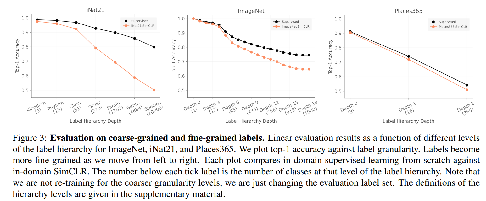

What are common drawbacks for the present contrastive learning methods?
When Does Contrastive Visual Representation Learning Work?
[2105.05837v1] When Does Contrastive Visual Representation Learning Work? (arxiv.org)
Contrastive Learning Survey (8) — Contrastive Learning bottlenecks
[2105.05837v1] When Does Contrastive Visual Representation Learning Work? (arxiv.org)
This paper indicates 4 bottlenecks of current contrastive learning framework: dataset size, domain, quality and task granularity.

Dataset Size
How much data is required to learn a “good” representation?
This paper compares the accuracy between 3 datasets from contrastive learning and supervised learning to answer this question.

The experiments concludes that:
- There is little benefit beyond 500k pretraining images.
- Self-supervised pretraining can be a good initializer when there is limited supervision available.
- Self-supervised representations can approach fully supervised performance for some datasets, but only by using lots of labeled images.
PS: the large gap between supervised and self-supervised performance on iNat21 in the high data regime suggests that iNat21 could be a useful benchmark for future self-supervised learning research. The high supervised performance shows that the task is possible, and yet the self-supervised performance remains quite low.
Data domain
What kind of images should we use for pretraining?
Not all pretraining sets are created equal.

Adding cross-domain data does not necessarily lead to more capable representations.

Different representations are seldom complementary.

The kinds of images used for self-supervised pretraining can have a significant impact on the learned representations.
Data quality

- Image resolution is critical.
- Adding high-frequency noise is much less harmful than erasing high frequency information.
Contrastive learning is sensitive for image resolution, while supervised learning is sensitive for JPEG compression.
Task granularity
Whether there are some downstream tasks for which self-supervised representations are particularly well or poorly suited.

The performance gap between contrastive learning and supervised learning grows as task granularity increases
Are the augmentations mis-specified?
The augmentation strategy of simCLR is for Image-net, so the default augmentation policy may be poorly tuned for other datasets.
Does contrastive learning have a coarse-grained bias?
Conclusion: we should find a new pretext task which is more suitable for fine-grained bias.